Portfolio
From 2021 to 2022 I developed a 3D animation short feature from conception to post-production, passing through animation, texture designing, rendering, rigging, simulation, etc, I did it all by myself. It was important to me to have this kind of experience, to fully understand the pipeline of 3D animation making. The character modeling was done through ZBrush software. Retopology was performed in Maya ensuring the needed edge loops for animation, and textures were painted through Substance Painter, Substance Designer , and Photoshop. The set was modeled directly in Maya, where also all the animation and simulation were performed. Rigging was done with the aid of the DP Auto Rig tool, the rendering was performed through VRay, and post-production was performed in After Effects software.
Flowering Seasons

Why the Seasons?
When I joined the animation course, I was informed that the final work was an animated short. In the first week, I decided I would only proceed with the course if I had an idea that would keep me motivated until the end.
So I sat, analyzed which would be my biggest challenges, and tried to address them first. It came to my mind that probably the sonorization would represent the biggest challenge for me, after all, it was an animation
course, not a sound design one. I was slightly mistaken about that because during the production I had support from a sound design teacher who helped me with the sonorization process. Nevertheless, I decided that
I should try to find a song to be played throughout the animation, hoping that it would inspire me to find the story I would like to tell. I looked for classical music first because I wouldn't need to worry
about copyrights. While looking for classical pieces I stumbled upon Vivaldi's Four Seasons. That moment I knew the story I would tell in my animated short. It started big, but I worked on the story to make it
possible to be done by one person in a short period. Despite being quite small and simple, I believe the short is open to several interpretations. When it was being sent to festivals I made sure to enfatize
the nature environment preservation aspect of it. Some people may see it as a child's story about friendship. Some even may see it as a metaphor for... you know (I swear, I tried my best to make the flower animation not resemble
anything more than a flower). The message for me is about the balance in life. We need to pass through the Winter times to be able to blossom in the Spring. It's all about life cycles.
In the animated short Spring takes the leading role. She is the one who learns the importance of other Seasons for the flower.
In the subsequent sections, the steps of the development of the animated short will be presented. During the short development, several alterations were made to achieve a better final result, thus, some of the presented artifacts may be different from the final cut.
Defining the look and design of the Seasons
The season's perception changes according to a series of factors. Its representation is highly influenced by the location, time, and culture surrounding the artist. However, they present some intrinsic characteristics that are highly associated with them. When designing the characters I was seeking to develop their appearance in a way that successfully would carry the corresponding season's most recognizable characteristics in stylized and memorable shapes. Since I would have to model, apply Maya retopology, texture, rig, and animate each character in a limited amount of time, competing with the course classes and my job, the character's visuals would need to effectively represent their corresponding season with the least possible complexity.
Spring
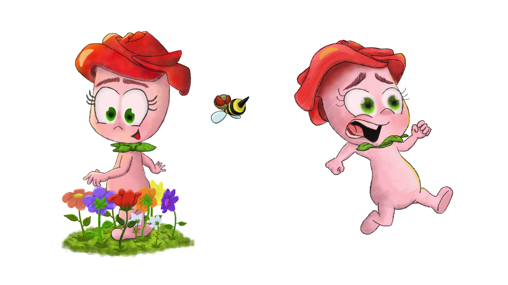
The characters were modeled with the same body structure. Their heads and accessories differentiate them. The head of Spring was modeled to resemble the shape of a rose with her hair modeled to resemble the petals. She uses a neck adornment with the shape of small leaves. The primary colors chosen for her are saturated red, pink, and green colors. Usually, everyone loves springtime. Her personality is based on this fact, which can make her a little proud sometimes because she is aware of how much color and joy she can bring to the environment.
Her main ability is to blossom the flowers. Due to this fact, her flower vase is the only one not damaged til the end of this story.
In the initial drafts, she would wear a cover and little shoes and would carry a small bag containing pollen to allow her to flower and blossom. The design was simplified to reduce the complexity of the following steps.
Spring drafts and concept art.

Spring model after Maya retopology.

Spring UV mapping check.

Spring diffuse color.

Spring UV maps.

Spring RIG structure.

Spring render and texture test using neutral lighting.
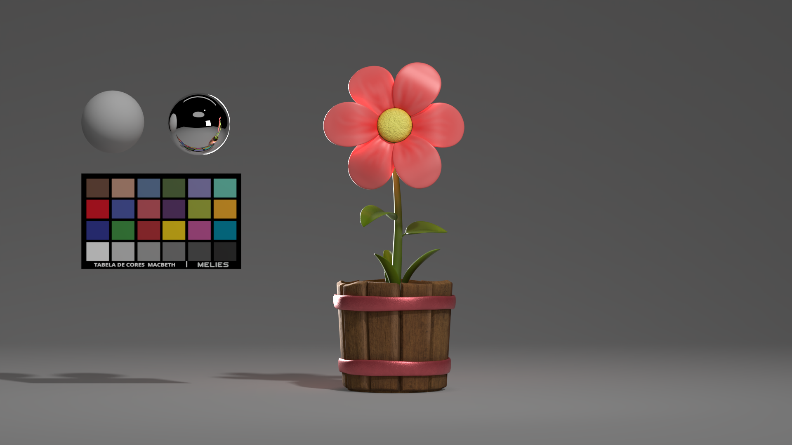Spring flower render and texture test.

Spring final render using lighting closer to the one present in the short.
Summer
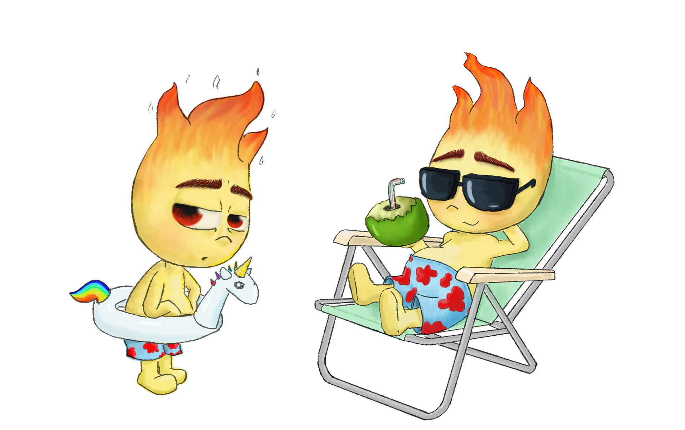The head of Summer was modeled to depict a fireball. Later in the short, we see him producing one to evaporate the cold damp gas that Winter is producing and form a rainy cloud. He wears swimming vacation shorts since this season is highly associated with vacation time. Summer's personality reflects this fact. He usually is in low mode, does not put much effort into his tasks, and seeks to chill and rest all the time. He knows that despite the way he performs, people still will be hoping for his time to come again next year as soon as possible. The character's primary colors are a saturated yellow that evolves to a saturated red at the tip of the flames. His shorts are clear sky blue. Summer's flower vase has gray marks due to having been burned. From the flower, we can see only the flower cord with a small burning flame on the top.
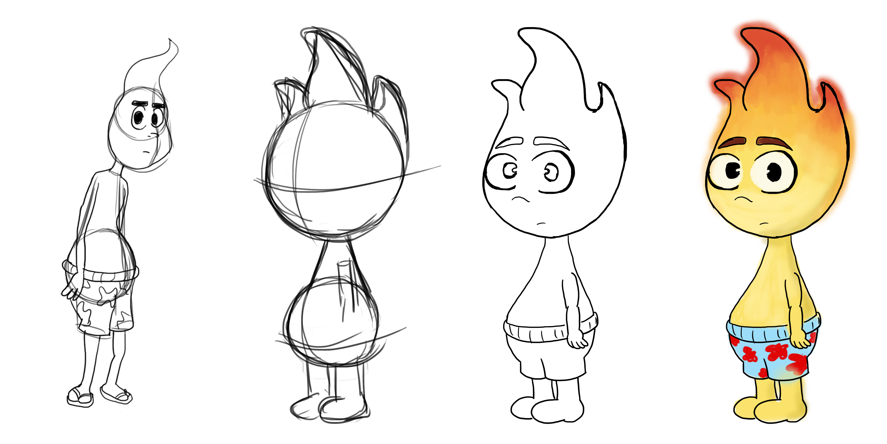Summer drafts and concept art.

Summer model after Maya retopology.

Summer UV mapping check.

Summer diffuse color.

Summer UV maps.

Summer RIG structure.

Summer render and texture test using neutral lighting.
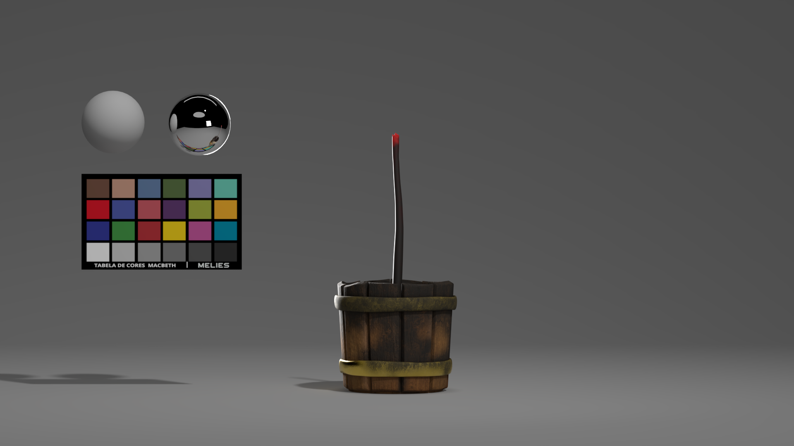Summer flower render and texture test.

Summer final render using lighting closer to the one present in the short.
Autumn
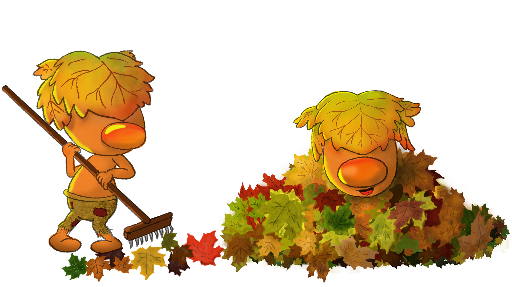Autumn has hair made of leaves. His eyes are covered by them, so the character was modeled without the eyes since there was no scene in which his hair leaves are lifted. He wears pants that resemble a cloth bag used to throw the dry leaves when they fall during this season. His main ability is to make the leaves and petals fall, and he is completely self-aware of this. For this reason, he is the only secondary character that shows contentment with his achievement results in the blossoming task, which is a flower completely dry and without petals. The fact that Autumn is pleased with a bad result is a personality characteristic of someone detached from reality. To reinforce this, the character seems to be the only one hearing the non-diegetic soundtrack. His color pallet resembles the colors from the leaves of this station, from the still healthy saturated green leaf to its completely unsaturated orange dry version.
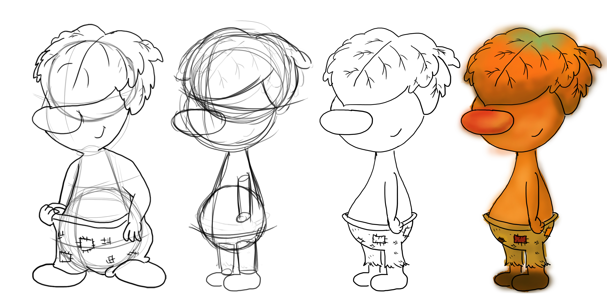Autumn drafts and concept art.

Autumn model after Maya retopology.

Autumn UV mapping check.

Autumn diffuse color.

Autumn UV maps.

Autumn RIG structure.

Autumn render and texture test using neutral lighting.
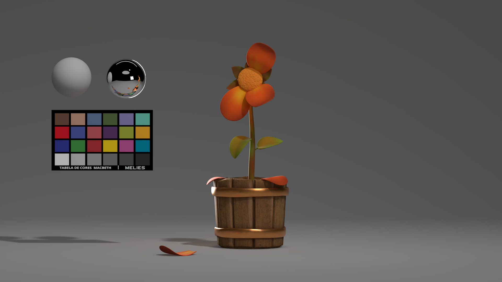Autumn flower render and texture test.

Autumn final render using lighting closer to the one present in the short.
Winter
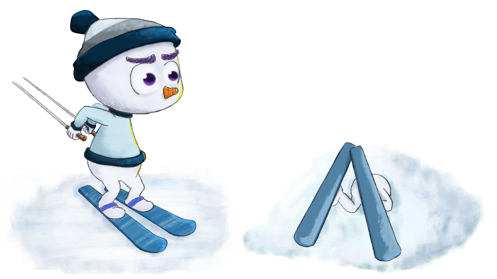Winter's head was modeled to resemble a snowball, with his nose being a carrot that usually is put in a snowman for this purpose. Depending on the location, as in tropical areas of the globe, this season never gets cold enough to snow. However, this phenomenon mostly happens during this season, and it is highly associated with it. He wears a cardigan and bonnet. The primary colors used to depict the character are cold colors going towards dark blue tones. During this season we see decay in nature until the Spring comes and provides the rebirth of the local flora. Usually, all living beings get ready for this season to deal with and not enjoy what it brings, for instance, building a shelter and storing food. This fact was used to model the character's personality. He has low self-esteem and is worried about the other season's perception of him. At the same time, he manages to be more empathetic towards the failure of others. His flower vase is frozen, covered in snow.
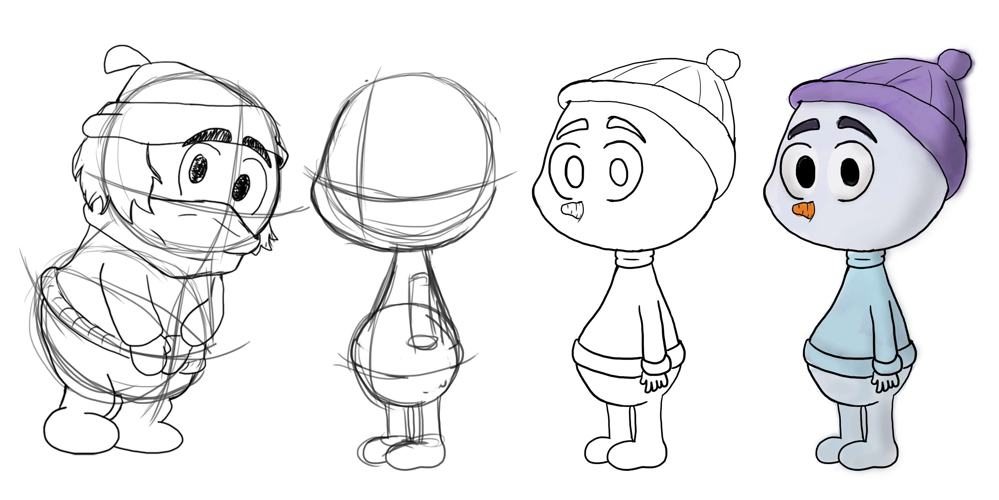Winter drafts and concept art.

Winter model after Maya retopology.

Winter UV mapping check.

Winter diffuse color.

Winter UV maps.

Winter RIG structure.

Winter render and texture test using neutral lighting.
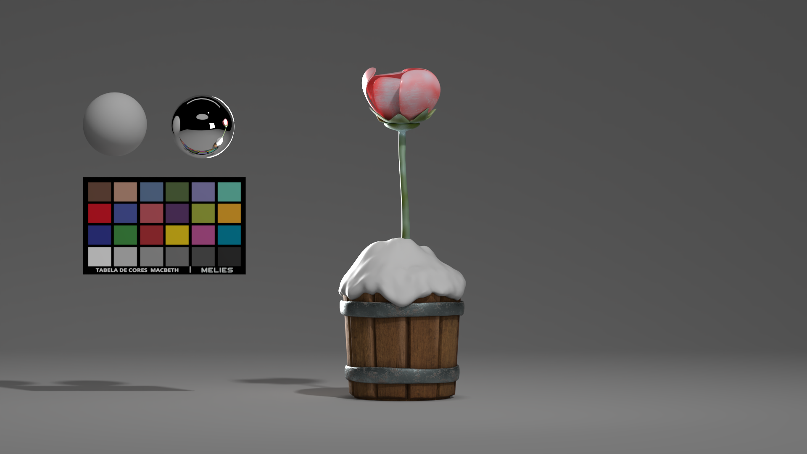Winter flower render and texture test.

Winter final render using lighting closer to the one present in the short.
The Professor Spring
The Professor was crafted using the model created for the character Spring. The petals were replaced by a vase with leaves, the eyelashes were removed and she was given a pair of glasses. She acts as a counterpoint to the characters' actions on stage, directing the viewer's interpretation.
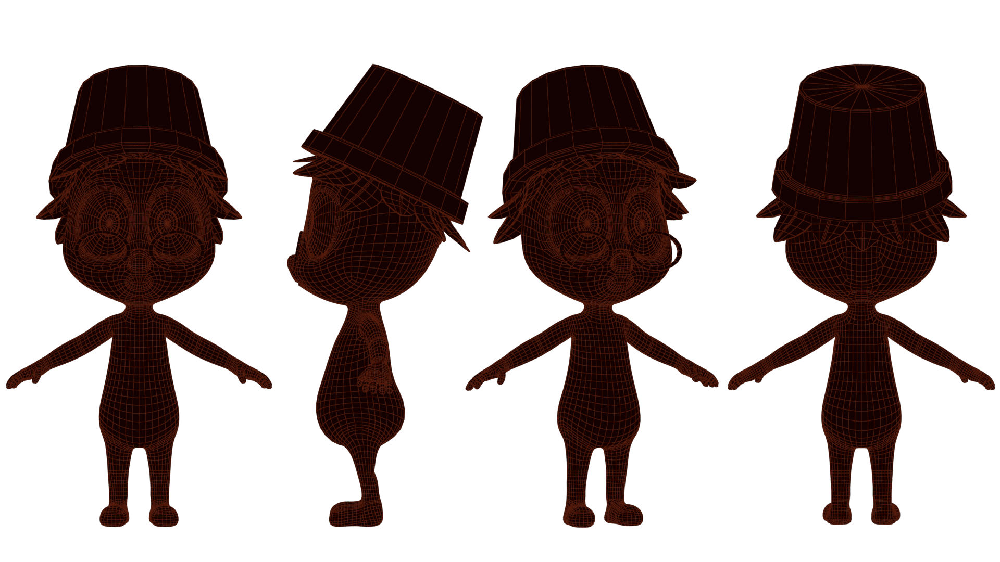Professor Spring model after Maya retopology.
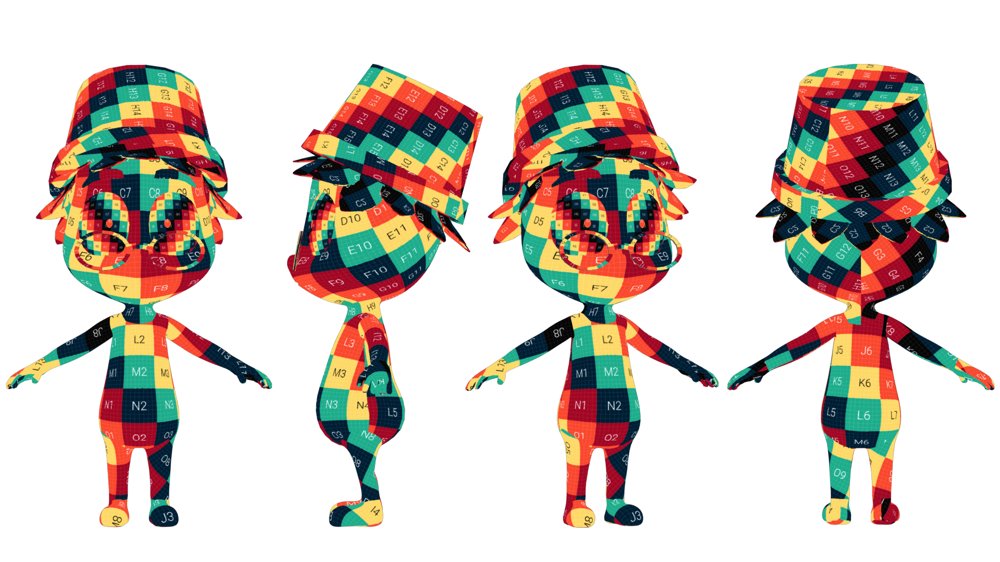Professor Spring UV mapping check.
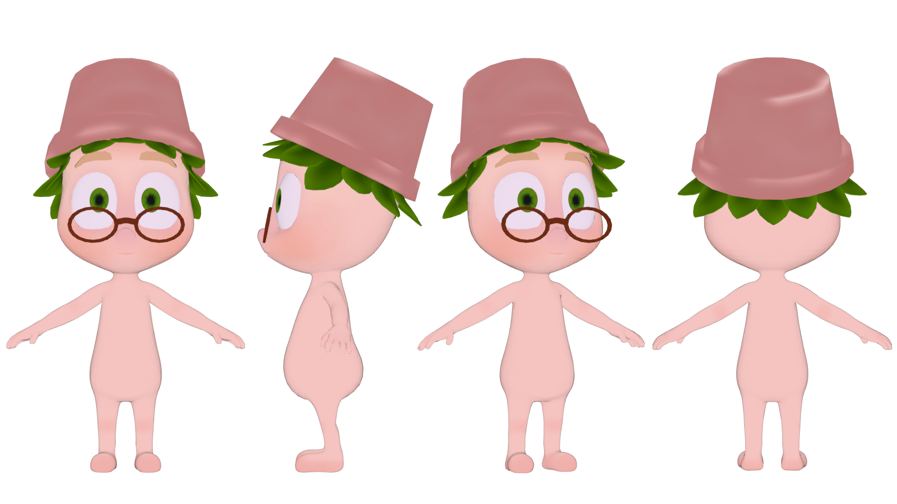Professor Spring diffuse color.
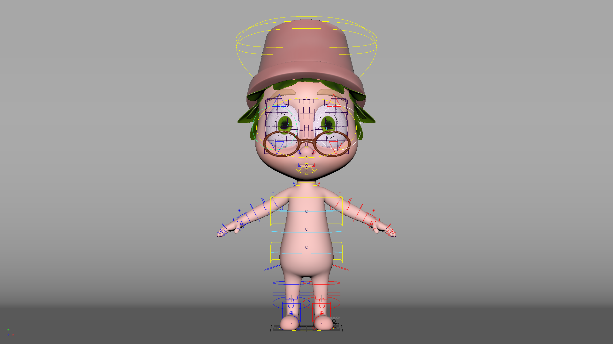Professor Spring RIG structure.
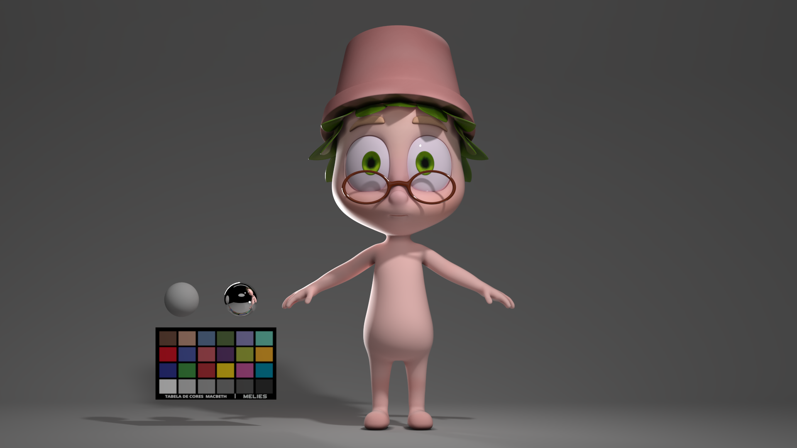Professor Spring render and texture test using neutral lighting.
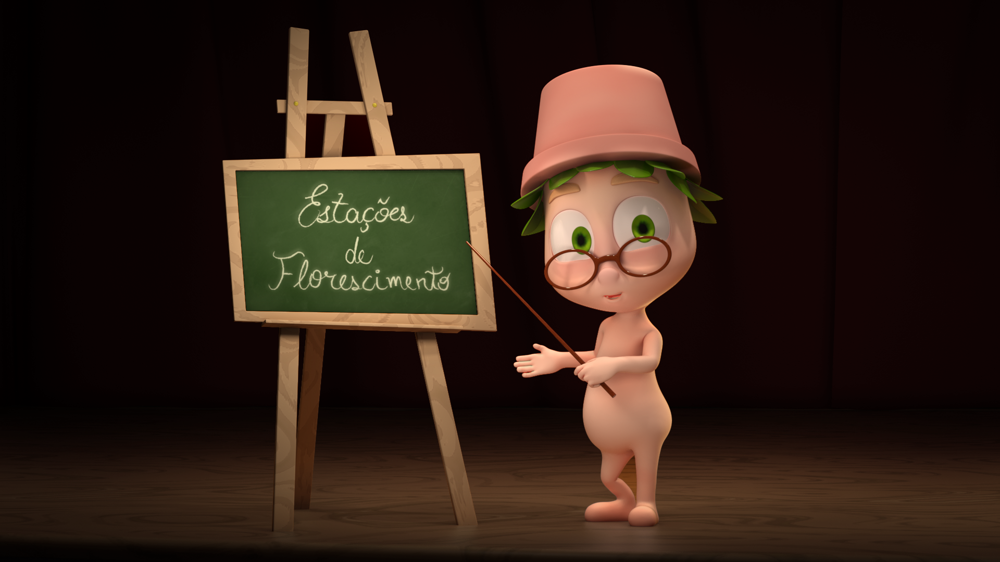Professor Spring final render using lighting closer to the one present in the short.
The Story
In a small auditorium, a being from each season (Spring, Summer, Autumn, and Winter) presents to an elderly Spring their ability in flower blossoming. Initially, only Spring can blossom the flower individually, a fact that makes her display an arrogant tone toward the other seasons. In a short time the flower withers. Since Spring's main ability is to blossom, she can not bring the flower back to life. After many attempts, Spring gives up on blossoming the flower and runs to the back of the stage. The remaining seasons on the stage, aware of the flower's needings at that moment, gather their abilities to bring life to the flower. Summer and Winter produce a small rain to water the flower and Autumn fall the dry petals. Spring can successfully blossom the flower this time. The seasons learn that each one of them plays an important role in life maintenance in nature, a primordial fact to allow a lasting blossoming of a flower.
The storyboard is presented below. It is not 100% faithful to the final result, since the project went through lots of adaptions during production, but the narrative is still the same. The characters are depicted in their initial design.
Coloring the Seasons
Most of the color of the short comes from the main characters. Each character has a unique color palette to depict the colors most associated with the season they represent. Spring has roses alike colors; Summer is represented by a saturated yellow with a little bit of orange and red; Autumn goes from the greenish saturated leaf color to its orange dry version; and Winter colors are dark blues, cold white, and grays. The background colors were desaturated to not compete with the viewer's attention from the main characters.
Bellow the ColorScript depicting key points in the narrative is shown.
 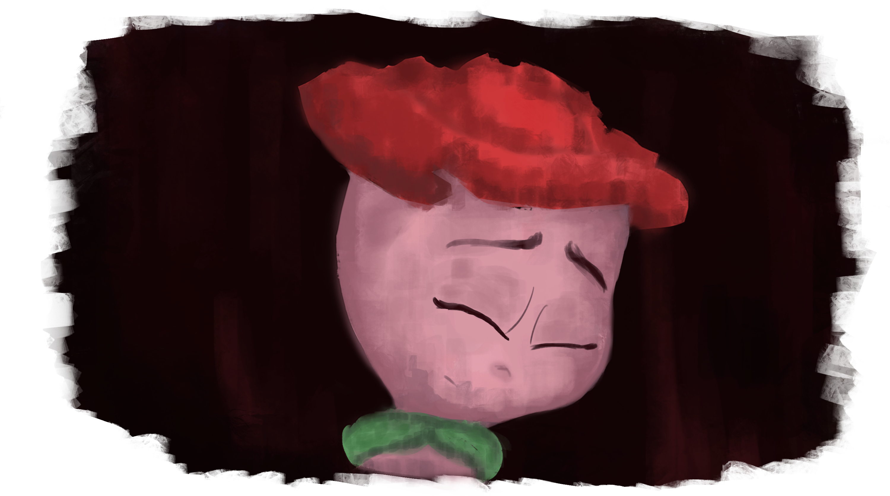
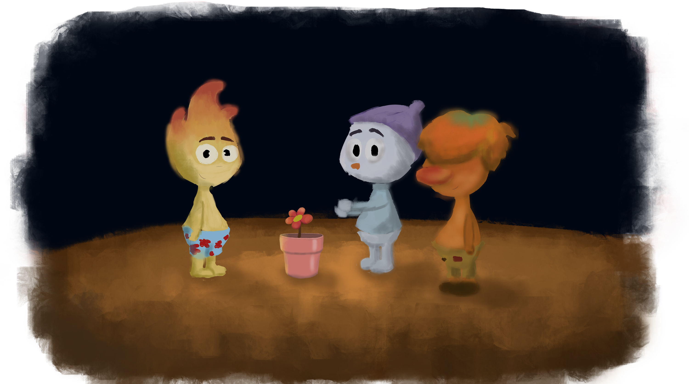
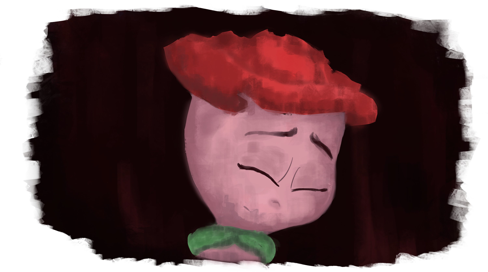
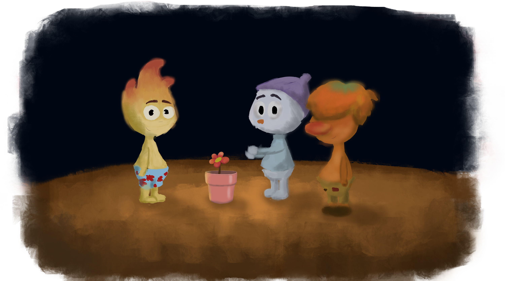

Where the Seasons are
To ensure the availability of the project execution the season's world was summarized up to a self-contained environment. The history takes place in a small auditorium, in which the stage takes most of the lighting. At the same time that the seasons are presenting themselves to the teacher in the crowd, this set also induces a viewer's perception of a character's presentation to them.
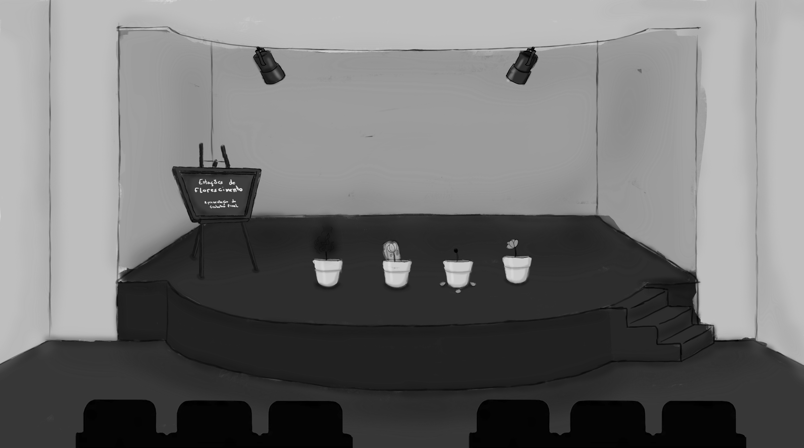Set concept.


The Seasons Tunes
Music plays an important role in the Flowering Seasons animated short. They are not only there to create rhythm and shape emotional responses, but also to add meaning to the scene. The pieces of classical music were chosen with specific purposes to complement the narrative. We can hear three compositions during the short. The first one set the initial scene mood. The habanera "L'amour est un oiseau rebelle" from Georges Bizet's opera "Carmen" is heard in the initial sequence when the characters are being analyzed by the professor. This tune has been overused in animation since the beginning and usually adds a comical feeling to the scene. It is at the same time a homage to old cartoons and a tool to lead the viewer's interpretation of the scene.
The second piece o music heard in the short is the theme for Spring from the violin concerto "The Four Seasons" composed by Antonio Vivaldi. Of the many classical themes composed for the seasons, this is one of the most recognizable. It is used in the short to define the Spring's moments of glory when the flower blossoms. Its interruption marks the moments in which the flower withers. A patch of the song is used later in the short when the seasons unite to relive the flower, to reinforce the meaning that the springtime of a flower also depends on the other seasons.
Finally, Irving Berlin's "Alexander's Ragtime Band" is used to emphasize the importance of the seasons' "teamwork" in the maintenance of the flower life. From the moment that the seasons unite their ability, each one performing their main ability in the right intensity amount, the flower's life is re-established and the blossoming is lasting. This happens because the seasons work this time as a band.
The Animated Short in Frames


Poster